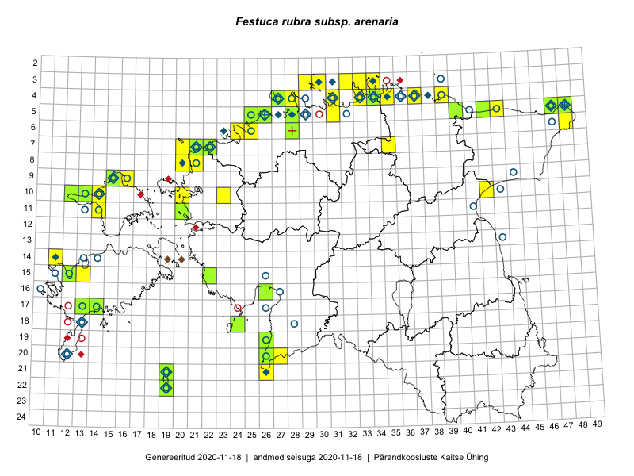

Festuca rubra subsp. arenaria — luide-aruhein
Poaceae :: Festuca arenaria Osbeck (150); Festuca rubra subsp. arenaria (L.) Hiitonen (143); Festuca rubra var. arenaria (Osbeck) Fr. (5)

Kaart põhineb 306 kirjel:
vaatlusi 129
herbaareksemplare 169
PKÜ kirjeid1 3
ELFi kirjeid2 5
Taime kaasaegsed ja ajaloolised leiukohad asuvad 84 ruudus.
Tingmärgid ja leidudega ruutude arvud periooditi uues (u) ja 2005 andmestikus (v)
| █ | vahemik | u3 | v4 |
|---|---|---|---|
| █ | 2006–2020 | 56 | – |
| ◆/◇ | 1971–2005 | 31 | 30 |
| ○ | 1921–1970 | 49 | 26 |
| + | kuni 1920 | 2 | 1 |
| × | hävinud | – | 0 |
| ? | kaheldav | – | 0 |
| Ruut | Leidja(d) | Leiuaeg | Kirje |
|---|---|---|---|
| 03-34 | Toomas Kukk, Ott Luuk, Kersti Tambets, Sten Mander, Kristine Fenske, Maie Itse | 2020-08-19 | ruut/ala: Festuca rubra subsp. arenaria (L.) Hiitonen |
| 06-28 | Toomas Kukk | 2020-07-12 | TAA0153295: Festuca rubra subsp. arenaria (L.) Hiitonen |
| 05-47 | Peedu Saar, Timo Luhamäe | 2019-09-12 | punkt: Festuca rubra subsp. arenaria (L.) Hiitonen |
| 04-31 | Thea Kull | 2019-09-05 | punkt: Festuca rubra subsp. arenaria (L.) Hiitonen |
| 05-26 | Ott Luuk, Peedu Saar | 2019-09-02 | ruut/ala: Festuca rubra subsp. arenaria (L.) Hiitonen |
| 03-32 | Ott Luuk, Jaak-Albert Metsoja | 2019-08-07 | ruut/ala: Festuca rubra subsp. arenaria (L.) Hiitonen |
| 03-33 | Ott Luuk, Jaak-Albert Metsoja | 2019-08-07 | ruut/ala: Festuca rubra subsp. arenaria (L.) Hiitonen |
| 04-33 | Ott Luuk, Jaak-Albert Metsoja | 2019-08-07 | ruut/ala: Festuca rubra subsp. arenaria (L.) Hiitonen |
| 04-33 | Ott Luuk, Jaak-Albert Metsoja | 2019-08-07 | punkt: Festuca rubra subsp. arenaria (L.) Hiitonen |
| 04-34 | Toomas Kukk, Rein Kalamees | 2019-08-06 | TAA0148715: Festuca rubra subsp. arenaria (L.) Hiitonen |
| 04-34 | Toomas Kukk, Rein Kalamees | 2019-08-06 | TAA0148716: Festuca rubra subsp. arenaria (L.) Hiitonen |
| 04-34 | Toomas Kukk, Rein Kalamees | 2019-08-06 | TAA0148716dupl: Festuca rubra subsp. arenaria (L.) Hiitonen |
| 05-28 | Thea Kull | 2019-06-11 | TAA0148140: Festuca rubra subsp. arenaria (L.) Hiitonen |
| 17-13 | Mari Reitalu | 2019-06-08 | TAA0152161: Festuca rubra subsp. arenaria (L.) Hiitonen |
| 10-13 | Toomas Kukk, Indrek Tammekänd | 2019-06-02 | ruut/ala: Festuca rubra subsp. arenaria (L.) Hiitonen |
| 10-13 | Toomas Kukk, Indrek Tammekänd | 2019-06-02 | punkt: Festuca rubra subsp. arenaria (L.) Hiitonen |
| 04-28 | Ott Luuk | 2018-09-07 | ruut/ala: Festuca rubra subsp. arenaria (L.) Hiitonen |
| 05-48 | Ott Luuk | 2018-08-10 | punkt: Festuca rubra subsp. arenaria (L.) Hiitonen |
| 04-33 | Peedu Saar, Toomas Kukk | 2018-08-08 | ruut/ala: Festuca rubra subsp. arenaria (L.) Hiitonen |
| 03-29 | Toomas Kukk | 2017-09-29 | ruut/ala: Festuca rubra subsp. arenaria (L.) Hiitonen |
| 03-30 | Peedu Saar | 2017-09-29 | punkt: Festuca rubra subsp. arenaria (L.) Hiitonen |
| 03-30 | Peedu Saar | 2017-09-29 | ruut/ala: Festuca rubra subsp. arenaria (L.) Hiitonen |
| 10-14 | Peedu Saar, Ott Luuk | 2017-09-14 | ruut/ala: Festuca rubra subsp. arenaria (L.) Hiitonen |
| 10-13 | Peedu Saar, Ott Luuk | 2017-09-14 | punkt: Festuca rubra subsp. arenaria (L.) Hiitonen |
| 10-13 | Ott Luuk, Peedu Saar | 2017-09-14 | ruut/ala: Festuca rubra subsp. arenaria (L.) Hiitonen |
| 10-14 | Ott Luuk, Peedu Saar | 2017-09-14 | punkt: Festuca rubra subsp. arenaria (L.) Hiitonen |
| 10-12 | Toomas Kukk, Indrek Tammekänd | 2017-09-12 | ruut/ala: Festuca rubra subsp. arenaria (L.) Hiitonen |
| 10-12 | Toomas Kukk, Indrek Tammekänd | 2017-09-12 | punkt: Festuca arenaria Osbeck |
| 20-26 | Ott Luuk | 2017-08-30 | TAA0142806: Festuca rubra subsp. arenaria (L.) Hiitonen |
| 20-26 | Ott Luuk | 2017-08-30 | TAA0142807: Festuca rubra subsp. arenaria (L.) Hiitonen |
| 05-26 | Peedu Saar, Timo Luhamäe | 2017-08-10 | TAA0141345: Festuca rubra subsp. arenaria (L.) Hiitonen |
| 07-35 | Toomas Kukk | 2017-08-03 | ruut/ala: Festuca rubra subsp. arenaria (L.) Hiitonen |
| 08-20 | Toomas Kukk, Ilmar Uibopuu | 2017-07-28 | ruut/ala: Festuca rubra subsp. arenaria (L.) Hiitonen |
| 07-20 | Toomas Kukk, Ilmar Uibopuu | 2017-07-28 | punkt: Festuca rubra subsp. arenaria (L.) Hiitonen |
| 08-20 | Toomas Kukk, Ilmar Uibopuu | 2017-07-28 | punkt: Festuca rubra subsp. arenaria (L.) Hiitonen |
| 07-21 | Toomas Kukk, Ilmar Uibopuu | 2017-07-28 | TAA0141784: Festuca rubra subsp. arenaria (L.) Hiitonen |
| 07-21 | Toomas Kukk, Ilmar Uibopuu | 2017-07-28 | TAA0141785: Festuca rubra subsp. arenaria (L.) Hiitonen |
| 04-27 | Peedu Saar | 2017-07-20 | punkt: Festuca rubra subsp. arenaria (L.) Hiitonen |
| 04-27 | Peedu Saar | 2017-07-20 | ruut/ala: Festuca rubra subsp. arenaria (L.) Hiitonen |
| 15-13 | Meeli Mesipuu, Toomas Kukk, Mari Reitalu | 2016-10-06 | ruut/ala: Festuca rubra subsp. arenaria (L.) Hiitonen |
| 18-24 | Ott Luuk, Peedu Saar | 2016-09-21 | TAA0142967: Festuca rubra subsp. arenaria (L.) Hiitonen |
| 05-43 | Peedu Saar, Toomas Kukk | 2016-09-13 | ruut/ala: Festuca rubra subsp. arenaria (L.) Hiitonen |
| 05-43 | Peedu Saar, Toomas Kukk | 2016-09-13 | punkt: Festuca rubra subsp. arenaria (L.) Hiitonen |
| 22-19 | Meeli Mesipuu, Ott Luuk | 2016-09-11 | TAA0137430: Festuca rubra subsp. arenaria (L.) Hiitonen |
| 21-19 | Ott Luuk, Meeli Mesipuu | 2016-09-10 | TAA0147323: Festuca rubra subsp. arenaria (L.) Hiitonen |
| 21-19 | Ott Luuk, Meeli Mesipuu | 2016-09-10 | TAA0147324: Festuca rubra subsp. arenaria (L.) Hiitonen |
| 21-19 | Ott Luuk, Meeli Mesipuu | 2016-09-10 | TAA0147325: Festuca rubra subsp. arenaria (L.) Hiitonen |
| 21-19 | Meeli Mesipuu, Ott Luuk | 2016-09-10 | ruut/ala: Festuca rubra subsp. arenaria (L.) Hiitonen |
| 04-31 | Toomas Kukk, Sander Laherand | 2016-08-31 | punkt: Festuca rubra subsp. arenaria (L.) Hiitonen |
| 04-31 | Sander Laherand, Toomas Kukk | 2016-08-31 | ruut/ala: Festuca rubra subsp. arenaria (L.) Hiitonen |
| 05-31 | Toomas Kukk, Sander Laherand | 2016-08-30 | punkt: Festuca rubra subsp. arenaria (L.) Hiitonen |
| 05-31 | Sander Laherand, Toomas Kukk | 2016-08-30 | ruut/ala: Festuca rubra subsp. arenaria (L.) Hiitonen |
| 17-14 | Toomas Kukk, Meeli Mesipuu, Johannes Kõdar | 2016-08-11 | ruut/ala: Festuca rubra subsp. arenaria (L.) Hiitonen |
| 17-14 | Toomas Kukk, Meeli Mesipuu, Johannes Kõdar | 2016-08-11 | TAA0137106: Festuca rubra subsp. arenaria (L.) Hiitonen |
| 10-13 | Sander Laherand, Nele Jõessar, Maret Gerz | 2016-08-10 | TAA0135827: Festuca rubra subsp. arenaria (L.) Hiitonen |
| 10-13 | Maret Gerz, Sander Laherand | 2016-08-10 | ruut/ala: Festuca rubra subsp. arenaria (L.) Hiitonen |
| 10-12 | Maret Gerz, Sander Laherand | 2016-08-10 | TAA0133730: Festuca rubra subsp. arenaria (L.) Hiitonen |
| 10-14 | Toomas Kukk, Sander Laherand, Nele Jõessar | 2016-08-09 | punkt: Festuca rubra subsp. arenaria (L.) Hiitonen |
| 11-14 | Thea Kull, Peedu Saar | 2016-08-09 | punkt: Festuca rubra subsp. arenaria (L.) Hiitonen |
| 10-14 | Sander Laherand, Toomas Kukk, Nele Jõessar | 2016-08-09 | ruut/ala: Festuca rubra subsp. arenaria (L.) Hiitonen |
| 11-14 | Peedu Saar, Thea Kull | 2016-08-09 | ruut/ala: Festuca rubra subsp. arenaria (L.) Hiitonen |
| 04-39 | Toomas Kukk, Hannes Pehlak, Susanna Vain | 2016-07-28 | punkt: Festuca rubra subsp. arenaria (L.) Hiitonen |
| 04-39 | Hannes Pehlak, Toomas Kukk, Susanna Vain | 2016-07-28 | ruut/ala: Festuca rubra subsp. arenaria (L.) Hiitonen |
| 05-42 | Tiit Hallikma, Tõnu Ploompuu | 2016-07-26 | punkt: Festuca arenaria Osbeck |
| 05-42 | Tiit Hallikma, Tõnu Ploompuu | 2016-07-26 | ruut/ala: Festuca rubra subsp. arenaria (L.) Hiitonen |
| 04-37 | Thea Kull, Eerik Leibak, Susanna Vain | 2016-07-26 | ruut/ala: Festuca rubra subsp. arenaria (L.) Hiitonen |
| 04-37 | Susanna Vain, Eerik Leibak, Thea Kull | 2016-07-26 | punkt: Festuca rubra subsp. arenaria (L.) Hiitonen |
| 04-28 | Sander Laherand, Tõnu Ploompuu, Nele Jõessar | 2016-07-25 | ruut/ala: Festuca rubra subsp. arenaria (L.) Hiitonen |
| 04-28 | Sander Laherand, Tõnu Ploompuu, Nele Jõessar | 2016-07-25 | punkt: Festuca rubra subsp. arenaria (L.) Hiitonen |
| 04-35 | Tõnu Ploompuu | 2016-07-16 | ruut/ala: Festuca rubra subsp. arenaria (L.) Hiitonen |
| 07-22 | Triin Reitalu, Sirje Azarov, Mari Reitalu | 2016-07-09 | TAA0137752: Festuca rubra subsp. arenaria (L.) Hiitonen |
| 07-22 | Mari Reitalu, Eerik Leibak | 2016-07-07–2016-07-10 | ruut/ala: Festuca rubra subsp. arenaria (L.) Hiitonen |
| 08-20 | Tiit Hallikma, Tõnu Ploompuu | 2016-07-07 | ruut/ala: Festuca rubra subsp. arenaria (L.) Hiitonen |
| 08-21 | Tiit Hallikma, Tõnu Ploompuu | 2016-07-07 | ruut/ala: Festuca rubra subsp. arenaria (L.) Hiitonen |
| 08-21 | Tiit Hallikma, Tõnu Ploompuu | 2016-07-07 | punkt: Festuca arenaria Osbeck |
| 08-21 | Tiit Hallikma, Tõnu Ploompuu | 2016-07-07 | punkt: Festuca rubra subsp. arenaria (L.) Hiitonen |
| 06-24 | Thea Kull, Helle Mäemets | 2016-07-07 | ruut/ala: Festuca rubra subsp. arenaria (L.) Hiitonen |
| 06-24 | Thea Kull, Helle Mäemets | 2016-07-07 | punkt: Festuca rubra subsp. arenaria (L.) Hiitonen |
| 11-20 | Aat Sarv, Maret Gerz | 2016-07-07 | TAA0144983: Festuca rubra subsp. arenaria (L.) Hiitonen |
| 06-25 | Toomas Kukk, Sander Laherand | 2016-07-05 | ruut/ala: Festuca rubra subsp. arenaria (L.) Hiitonen |
| 05-25 | Toomas Kukk, Sander Laherand | 2016-07-05 | TAA0139585: Festuca rubra subsp. arenaria (L.) Hiitonen |
| 05-25 | Toomas Kukk, Sander Laherand | 2016-07-05 | TAA0139586: Festuca rubra subsp. arenaria (L.) Hiitonen |
| 06-25 | Sander Laherand, Toomas Kukk | 2016-07-05 | punkt: Festuca rubra subsp. arenaria (L.) Hiitonen |
| 05-25 | Sander Laherand, Toomas Kukk | 2016-07-05 | ruut/ala: Festuca rubra subsp. arenaria (L.) Hiitonen |
| 16-26 | Maret Gerz, Aat Sarv | 2016-07-04 | TAA0134622: Festuca rubra subsp. arenaria (L.) Hiitonen |
| 10-20 | Thea Kull | 2016-06-30 | punkt: Festuca arenaria Osbeck |
| 05-43 | Erkki Otsman | 2016-06-17 | ruut/ala: Festuca rubra subsp. arenaria (L.) Hiitonen |
| 21-26 | Thea Kull, Peedu Saar | 2016-06-07 | ruut/ala: Festuca rubra subsp. arenaria (L.) Hiitonen |
| 19-26 | Thea Kull, Peedu Saar | 2016-06-07 | TAA0132922: Festuca arenaria Osbeck |
| 21-26 | Peedu Saar, Thea Kull | 2016-06-07 | punkt: Festuca rubra subsp. arenaria (L.) Hiitonen |
| 06-28 | Toomas Kukk | 2016-06-06 | ruut/ala: Festuca rubra subsp. arenaria (L.) Hiitonen |
| 06-28 | Toomas Kukk | 2016-06-06 | TAA0137245: Festuca rubra subsp. arenaria (L.) Hiitonen |
| 20-27 | Thea Kull, Peedu Saar | 2016-06-06 | ruut/ala: Festuca rubra subsp. arenaria (L.) Hiitonen |
| 20-26 | Peedu Saar, Thea Kull | 2016-06-06 | ruut/ala: Festuca rubra subsp. arenaria (L.) Hiitonen |
| 20-26 | Peedu Saar, Thea Kull | 2016-06-06 | TAA0134734: Festuca rubra subsp. arenaria (L.) Hiitonen |
| 04-27 | Toomas Kukk | 2016-05-25 | ruut/ala: Festuca rubra subsp. arenaria (L.) Hiitonen |
| 04-27 | Toomas Kukk | 2016-05-25 | TAA0137816: Festuca rubra subsp. arenaria (L.) Hiitonen |
| 15-22 | Maret Gerz, Leena Gerz | 2015-08-15 | TAA0119294: Festuca rubra subsp. arenaria (L.) Hiitonen |
| 09-15 | Toomas Kukk, Eerik Leibak | 2015-08-11 | ruut/ala: Festuca rubra subsp. arenaria (L.) Hiitonen |
| 09-16 | Toomas Kukk, Eerik Leibak | 2015-08-11 | ruut/ala: Festuca rubra subsp. arenaria (L.) Hiitonen |
| 09-16 | Toomas Kukk, Eerik Leibak | 2015-08-11 | punkt: Festuca rubra subsp. arenaria (L.) Hiitonen |
| 09-15 | Toomas Kukk, Eerik Leibak | 2015-08-11 | TAA0135536: Festuca rubra subsp. arenaria (L.) Hiitonen |
| 10-42 | Kai Rünk, Ülle Jõgar, Illi Tarmu | 2015-07-29 | ruut/ala: Festuca rubra subsp. arenaria (L.) Hiitonen |
| 05-48 | Meeli Mesipuu, Timo Luhamäe | 2015-07-23 | ruut/ala: Festuca rubra subsp. arenaria (L.) Hiitonen |
| 05-48 | Meeli Mesipuu, Timo Luhamäe | 2015-07-23 | TAA0143931: Festuca rubra subsp. arenaria (L.) Hiitonen |
| 05-47 | Tiit Hallikma, Toomas Kukk | 2015-07-22 | ruut/ala: Festuca rubra subsp. arenaria (L.) Hiitonen |
| 05-47 | Tiit Hallikma, Toomas Kukk | 2015-07-22 | TAA0134323: Festuca arenaria Osbeck |
| 05-42 | Thea Kull, Eerik Leibak | 2015-07-22 | ruut/ala: Festuca rubra subsp. arenaria (L.) Hiitonen |
| 05-42 | Eerik Leibak, Thea Kull | 2015-07-22 | TAA0113784: Festuca arenaria Osbeck |
| 05-42 | Eerik Leibak, Thea Kull | 2015-07-22 | TAA0113783: Festuca arenaria Osbeck |
| 05-42 | Eerik Leibak, Thea Kull | 2015-07-22 | TAA0113782: Festuca arenaria Osbeck |
| 05-40 | Kaili Orav, Silvia Pihu | 2015-07-21 | ruut/ala: Festuca rubra subsp. arenaria (L.) Hiitonen |
| 05-40 | Kaili Orav, Silvia Pihu | 2015-07-21 | TAA0134861: Festuca rubra subsp. arenaria (L.) Hiitonen |
| 15-12 | Mari Reitalu, Oliver Parrest | 2015-07-16 | TAA0140623: Festuca rubra subsp. arenaria (L.) Hiitonen |
| 14-11 | Mari Reitalu, Oliver Parrest | 2015-07-14 | ruut/ala: Festuca rubra subsp. arenaria (L.) Hiitonen |
| 15-12 | Mari Reitalu, Oliver Parrest | 2015-07-14 | ruut/ala: Festuca rubra subsp. arenaria (L.) Hiitonen |
| 14-11 | Mari Reitalu, Oliver Parrest | 2015-07-14 | punkt: Festuca arenaria Osbeck |
| 05-42 | Kaili Orav, Silvia Pihu | 2015-06-18 | TAA0134823: Festuca rubra subsp. arenaria (L.) Hiitonen |
| 06-48 | Thea Kull, Peedu Saar | 2015-04-26 | ruut/ala: Festuca rubra subsp. arenaria (L.) Hiitonen |
| 15-12 | Elle Roosaluste | 2014-09-13 | punkt: Festuca arenaria Osbeck |
| 14-11 | Elle Roosaluste | 2013-09-06 | punkt: Festuca arenaria Osbeck |
| 10-23 | Uve Ramst | 2013-08-07 | punkt: Festuca arenaria Osbeck |
| 09-15 | Toomas Kukk, Rein Kalamees, Aleksander Sennikov, Raul Sulbi | 2005-07-13 | ruut/ala: Festuca rubra subsp. arenaria (L.) Hiitonen |
| 10-14 | Toomas Kukk | 2005-07-12 | TAA0102527: Festuca arenaria Osbeck |
| 05-48 | Kaili Kattai, Vivika Meltsov | 2005-06-23 | TAA0104042: Festuca rubra subsp. arenaria (L.) Hiitonen |
| 03-34 | Meeli Mesipuu, Katrin Jürgens | 2005-06-08 | PKÜ: 11870 |
| 03-34 | Meeli Mesipuu, Katrin Jürgens | 2005-06-07 | PKÜ: 11846 |
| 04-38 | Tõnu Ploompuu | 2004-06-28 | punkt: Festuca rubra subsp. arenaria (L.) Hiitonen |
| 21-19 | J.-M. Habicht | 2003-07-01 | TAM0064577: Festuca arenaria Osbeck |
| 21-19 | J.-M. Habicht | 2003-07-01 | TAM0064578: Festuca arenaria Osbeck |
| 04-27 | Urmas Laansoo | 2000-08-28–2000-08-29 | ruut/ala: Festuca rubra subsp. arenaria (L.) Hiitonen |
| 14-20 | Anneli Tamm, Andres Kuresoo, Leho Luigujõe | 2000-06-09 | PKÜ: 2206 |
| 04-37 | Jana-Maria Habicht | 1999-08-03 | TAM0100861: Festuca arenaria Osbeck |
| 08-20 | Toomas Kukk, Andres Luhamaa | 1999-08-01 | ruut/ala: Festuca arenaria Osbeck |
| 04-27 | Vilma Kuusk, Heljo Krall | 1999-06-27 | ruut/ala: Festuca arenaria Osbeck |
| 05-29 | Toomas Kukk | 1997-06-14 | ruut/ala: Festuca rubra subsp. arenaria (L.) Hiitonen |
| 21-19;22-19 | Elle Roosaluste | 1994-08-26–1994-08-27 | ELF: 6161 |
| 14-11 | Mari Reitalu, Tiiu Maran | 1994-08-04 | ruut/ala: Festuca rubra subsp. arenaria (L.) Hiitonen |
| 18-13 | Elle Roosaluste | 1993-08-12 | ELF: 1676 |
| 18-13 | Elle Roosaluste | 1993-08-12 | ELF: 6121 |
| 14-19 | Urmas Tokko | 1993-07-30 | ELF: 1937 |
| 20-12 | Erkki Otsman | 1993-07-13 | ELF: 6354 |
| 06-23 | Tõnu Ploompuu | 1992–1999 | ruut/ala: Festuca rubra subsp. arenaria (L.) Hiitonen |
| 05-29 | Heinrich Aasamaa | 1991-07-15–1991-08-05 | TAM0138436: Festuca arenaria Osbeck |
| 03-34 | Toomas Kukk | 1991-07-14 | TAA0102419: Festuca arenaria Osbeck |
| 05-29 | Heinrich Aasamaa | 1991-07-13 | TAM0138445: Festuca arenaria Osbeck |
| 03-34 | Toomas Kukk, Rein Kalamees | 1991-05-29–1991-07-16 | ruut/ala: Festuca rubra subsp. arenaria (L.) Hiitonen |
| 14-11 | Mari Reitalu | 1989–1998 | ruut/ala: Festuca arenaria Osbeck |
| 05-29 | Virve Roost, Mai Zernask, Laimdota Truus | 1989–1990 | ruut/ala: Festuca rubra subsp. arenaria (L.) Hiitonen |
| 05-28 | Heinrich Aasamaa | 1983-07-06 | TAM0138438: Festuca arenaria Osbeck |
| 05-26 | H. Aasamaa | 1982-07-25 | TAM0018069: Festuca rubra subsp. arenaria (L.) Hiitonen |
| 07-21 | botaaniline ekspeditsioon ZBI | 1981-06-30 | ruut/ala: Festuca arenaria Osbeck |
| 07-22 | botaaniline ekspeditsioon ZBI | 1981-06-29–1981-06-30 | ruut/ala: Festuca arenaria Osbeck |
| 07-22 | Linda Viljasoo | 1981-06-29 | TAA0102511: Festuca arenaria Osbeck |
| 03-34 | Linda Viljasoo | 1980-07-08 | TAA0102411: Festuca arenaria Osbeck |
| 05-27 | H. Aasamaa | 1980-07-04 | TAM0011780: Festuca rubra subsp. arenaria (L.) Hiitonen |
| 05-27 | H. Aasamaa | 1980-07-04 | TAM0018070: Festuca rubra subsp. arenaria (L.) Hiitonen |
| 04-33 | M. Kask | 1977-07-19 | TAA0102442: Festuca arenaria Osbeck |
| 04-33 | M. Kask | 1977-07-19 | TAA0102443: Festuca arenaria Osbeck |
| 04-33 | M. Kask | 1977-07-15 | TAA0102444: Festuca arenaria Osbeck |
| 04-34 | M. Kask | 1976-07-09 | TAA0102445: Festuca arenaria Osbeck |
| 04-34 | M. Kask | 1976-07-09 | TAA0102446: Festuca arenaria Osbeck |
| 04-34 | M. Kask | 1976-07-09 | TAA0102447: Festuca arenaria Osbeck |
| 03-34 | Linda Viljasoo | 1974-07-23 | TAA0102452: Festuca arenaria Osbeck |
| 04-36 | Linda Viljasoo | 1974-07-21 | TAA0102448: Festuca arenaria Osbeck |
| 04-36 | Linda Viljasoo | 1974-07-21 | TAA0102449: Festuca arenaria Osbeck |
| 04-33 | Linda Viljasoo | 1974-07-20 | TAA0102450: Festuca arenaria Osbeck |
| 04-33 | Linda Viljasoo | 1974-07-20 | TAA0102453: Festuca arenaria Osbeck |
| 04-35 | M. Kask | 1974-07-19 | TAA0102451: Festuca arenaria Osbeck |
| 04-35 | 1974-07–1975-08 | ruut/ala: Festuca rubra subsp. arenaria (L.) Hiitonen | |
| 04-36 | 1974–1977 | ruut/ala: Festuca arenaria Osbeck | |
| 04-37 | 1974–1976 | ruut/ala: Festuca rubra subsp. arenaria (L.) Hiitonen | |
| 22-19 | M. Kask | 1973-06-03 | TAA0102409: Festuca arenaria Osbeck |
| 22-19 | M. Kask | 1973-06-03 | TAA0102410: Festuca arenaria Osbeck |
| 21-26 | Vilma Kuusk | 1972-06-30 | TAA0102492: Festuca arenaria Osbeck |
| 21-26 | Vilma Kuusk | 1972-06-30 | TAA0102493: Festuca arenaria Osbeck |
| 03-31 | H. Rebassoo | 1972-06-13 | TAA0102517: Festuca arenaria Osbeck |
| 03-30 | Haide-Ene Rebassoo | 1972-06-10 | ruut/ala: Festuca rubra subsp. arenaria (L.) Hiitonen |
| 04-31 | H. Rebassoo | 1972-06-09 | TAA0102437: Festuca arenaria Osbeck |
| 21-26 | Vilma Kuusk | 1972 | ruut/ala: Festuca rubra subsp. arenaria (L.) Hiitonen |
| 05-47 | M. Kask | 1971-08-05 | TAA0102507: Festuca arenaria Osbeck |
| 05-48 | Maret Kask, Linda Viljasoo | 1971–1973 | ruut/ala: Festuca rubra subsp. arenaria (L.) Hiitonen |
| 07-21 | Vilma Kuusk | 1970-07-22 | TAA0102513: Festuca arenaria Osbeck |
| 10-13 | M. Kask | 1970-07-16 | TAA0102417: Festuca arenaria Osbeck |
| 10-13 | M. Kask | 1970-07-16 | TAA0102418: Festuca arenaria Osbeck |
| 11-13 | M. Kask | 1970-07-12 | TAA0102420: Festuca arenaria Osbeck |
| 11-13 | M. Kask | 1970-07-12 | TAA0102421: Festuca arenaria Osbeck |
| 10-14 | M. Kask | 1970-07-11 | ruut/ala: Festuca rubra subsp. arenaria (L.) Hiitonen |
| 09-15 | Maret Kask, Ants Roos, P. Põldmaa | 1970-07-09 | ruut/ala: Festuca rubra subsp. arenaria (L.) Hiitonen |
| 10-14 | Silvia Talts | 1970-07-08 | TAA0102422: Festuca arenaria Osbeck |
| 10-14 | Silvia Talts | 1970-07-08 | TAA0102423: Festuca arenaria Osbeck |
| 08-21 | M. Kask, A. Roos | 1970-07 | ruut/ala: Festuca arenaria Osbeck |
| 14-14 | Maret Kask | 1969-07-29–1969-07-30 | ruut/ala: Festuca arenaria Osbeck |
| 14-13 | Linda Viljasoo | 1969-07-29 | TAA0102430: Festuca arenaria Osbeck |
| 14-13 | Linda Viljasoo | 1969-07-29 | TAA0102431: Festuca arenaria Osbeck |
| 14-13 | Linda Viljasoo | 1969-07-29 | TAA0102432: Festuca arenaria Osbeck |
| 14-13 | Linda Viljasoo | 1969-07-29 | TAA0102433: Festuca arenaria Osbeck |
| 14-13 | Linda Viljasoo | 1969-07-29 | TAA0102434: Festuca arenaria Osbeck |
| 20-12 | M. Kask | 1969-07-25 | TAA0102524: Festuca arenaria Osbeck |
| 20-12 | M. Kask | 1969-07-25 | TAA0102525: Festuca arenaria Osbeck |
| 15-11 | Linda Viljasoo | 1969-06-26 | TAA0102441: Festuca arenaria Osbeck |
| 05-47 | Maret Kask | 1969-06-22 | ruut/ala: Festuca arenaria Osbeck |
| 05-47 | M. Kask | 1969-06-22 | TAA0102503: Festuca arenaria Osbeck |
| 05-47 | M. Kask | 1969-06-22 | TAA0102504: Festuca arenaria Osbeck |
| 05-47 | M. Kask | 1969-06-22 | TAA0102505: Festuca arenaria Osbeck |
| 06-47 | Linda Viljasoo | 1969-06-22 | TAA0102467: Festuca arenaria Osbeck |
| 06-47 | Linda Viljasoo | 1969-06-22 | TAA0102468: Festuca arenaria Osbeck |
| 06-47 | Linda Viljasoo | 1969-06-22 | TAA0102469: Festuca arenaria Osbeck |
| 05-43 | Vilma Kuusk | 1969-06-21 | TAA0102466: Festuca arenaria Osbeck |
| 05-43 | Vilma Kuusk | 1969-06-21 | TAA0102500: Festuca arenaria Osbeck |
| 05-43 | Vilma Kuusk | 1969-06-21 | TAA0102501: Festuca arenaria Osbeck |
| 05-43 | Vilma Kuusk | 1969-06-21 | TAA0102502: Festuca arenaria Osbeck |
| 15-12 | Linda Viljasoo | 1968-07-30 | TAA0102463: Festuca arenaria Osbeck |
| 18-13 | Linda Viljasoo | 1968-07-28 | TAA0102425: Festuca arenaria Osbeck |
| 19-26 | Eesi Ruus (Kolla) | 1967-06-07 | TAA0119581: Festuca rubra subsp. arenaria (L.) Hiitonen |
| 05-48 | A. Saare | 1964-07-28 | TAA0102506: Festuca arenaria Osbeck |
| 10-14 | Linda Viljasoo | 1964-07-10 | TAA0102414: Festuca arenaria Osbeck |
| 10-14 | Linda Viljasoo | 1964-07-10 | TAA0102415: Festuca arenaria Osbeck |
| 15-11 | Linda Viljasoo | 1964-06-27 | TAA0102438: Festuca arenaria Osbeck |
| 15-11 | Linda Viljasoo | 1964-06-27 | TAA0102439: Festuca arenaria Osbeck |
| 15-11 | Linda Viljasoo | 1964-06-26 | TAA0102440: Festuca arenaria Osbeck |
| 18-13 | Linda Viljasoo | 1964-06-19 | TAA0102428: Festuca arenaria Osbeck |
| 18-13 | Linda Viljasoo | 1964-06-19 | TAA0102429: Festuca arenaria Osbeck |
| 15-11 | Mari Reitalu | 1963-07-02 | ruut/ala: Festuca rubra subsp. arenaria (L.) Hiitonen |
| 09-44 | Linda Viljasoo | 1963-06-28 | TAA0102472: Festuca arenaria Osbeck |
| 04-36 | Linda Viljasoo | 1963-06-20 | TAA0102464: Festuca arenaria Osbeck |
| 05-41 | Visolde Puusepp, A. Saare | 1961-07-03 | TAA0102465: Festuca arenaria Osbeck |
| 21-19 | TRÜ tudengid, Hans Trass, Aino Kalda | 1961-07–1961-07-11 | ruut/ala: Festuca rubra subsp. arenaria (L.) Hiitonen |
| 20-26 | K. Kalamees, U. Kalamees | 1961-06-30 | TAA0102508: Festuca arenaria Osbeck |
| 16-10 | H. Rebassoo | 1960-08-24 | TAA0102435: Festuca arenaria Osbeck |
| 05-25 | Salme Lill, H. Tamm | 1960-08-11 | TAA0102462: Festuca arenaria Osbeck |
| 06-25 | M. Kask | 1960-08-11 | TAA0102516: Festuca arenaria Osbeck |
| 06-25 | M. Kask | 1960-08-11 | TAA0102522: Festuca arenaria Osbeck |
| 07-22 | Vilma Kuusk | 1960-07-16 | TAA0102512: Festuca arenaria Osbeck |
| 07-21 | M. Kask | 1960-07-13 | TAA0102497: Festuca arenaria Osbeck |
| 07-21 | M. Kask | 1960-07-13 | TAA0102498: Festuca arenaria Osbeck |
| 07-21 | M. Kask | 1960-07-13 | TAA0102499: Festuca arenaria Osbeck |
| 18-13 | K. Pork | 1959-07-15 | TAA0102427: Festuca arenaria Osbeck |
| 15-11 | Linda Viljasoo | 1959-06-21 | TAA0102486: Festuca arenaria Osbeck |
| 17-26 | Elli Lellep | 1958-07-16 | TAA0102489: Festuca arenaria Osbeck |
| 04-34 | M. Kask | 1958-06-27 | TAA0102454: Festuca arenaria Osbeck |
| 04-34 | M. Kask | 1958-06-27 | TAA0102455: Festuca arenaria Osbeck |
| 04-33 | I. Karu, Visolde Puusepp | 1958-06-27 | TAA0102521: Festuca arenaria Osbeck |
| 04-31 | Linda Viljasoo | 1958-06-18 | TAA0102518: Festuca arenaria Osbeck |
| 04-31 | H. Tamm, H. Karu | 1958-06-18 | TAA0102519: Festuca arenaria Osbeck |
| 05-32 | Vilma Kuusk, E. Muru | 1958-06-17 | TAA0102520: Festuca arenaria Osbeck |
| 04-31 | Silvia Talts | 1958-06-17 | TAA0102412: Festuca arenaria Osbeck |
| 05-29 | Silvia Talts | 1958-06-14 | TAA0102514: Festuca arenaria Osbeck |
| 05-29 | Silvia Talts | 1958-06-14 | TAA0102515: Festuca arenaria Osbeck |
| 10-14 | H. Tamm | 1958-06-10 | TAA0102416: Festuca arenaria Osbeck |
| 10-13 | H. E. Rebassoo | 1957-06-20 | TAA0102426: Festuca arenaria Osbeck |
| 09-16 | Haide-Ene Rebassoo | 1957–1984 | ruut/ala: Festuca rubra subsp. arenaria (L.) Hiitonen |
| 10-13 | Haide-Ene Rebassoo | 1957–1984 | ruut/ala: Festuca rubra subsp. arenaria (L.) Hiitonen |
| 10-14 | Haide-Ene Rebassoo | 1957–1984 | ruut/ala: Festuca rubra var. arenaria (Osbeck) Fr. |
| 11-13 | Haide-Ene Rebassoo | 1957–1984 | ruut/ala: Festuca rubra subsp. arenaria (L.) Hiitonen |
| 11-14 | Haide-Ene Rebassoo | 1957–1984 | ruut/ala: Festuca rubra subsp. arenaria (L.) Hiitonen |
| 10-13 | Haide-Ene Rebassoo | 1957–1984 | ruut/ala: Festuca rubra subsp. arenaria (L.) Hiitonen |
| 19-26 | Linda Viljasoo | 1956-09-05 | TAA0102523: Festuca arenaria Osbeck |
| 15-26 | Linda Viljasoo | 1956-06-30 | TAA0102490: Festuca arenaria Osbeck |
| 15-26 | Linda Viljasoo | 1956-06-30 | TAA0102491: Festuca arenaria Osbeck |
| 09-15 | M. Kask | 1956-06-29 | TAA0102413: Festuca arenaria Osbeck |
| 04-33 | J. Kaasik, K. Kalamees | 1956-06-27 | TAA0102458: Festuca arenaria Osbeck |
| 04-33 | J. Kaasik, K. Kalamees | 1956-06-27 | TAA0102459: Festuca arenaria Osbeck |
| 10-14 | H. Karu, H. Rebassoo | 1956-06-25 | TAA0102424: Festuca arenaria Osbeck |
| 04-37 | J. Kaasik, K. Kalamees | 1956-06-22 | TAA0102456: Festuca arenaria Osbeck |
| 04-37 | J. Kaasik, K. Kalamees | 1956-06-22 | TAA0102457: Festuca arenaria Osbeck |
| 04-36 | J. Kaasik, K. Kalamees | 1956-06-22 | TAA0102460: Festuca arenaria Osbeck |
| 04-36 | J. Kaasik, K. Kalamees | 1956-06-22 | TAA0102461: Festuca arenaria Osbeck |
| 13-43 | G. Palm | 1956-06-20 | TAA0102470: Festuca arenaria Osbeck |
| 11-41 | J. Kaasik, K. Kalamees | 1956-06-15 | TAA0102473: Festuca arenaria Osbeck |
| 10-13 | M. Kask | 1948-08-02–1970-07-16 | ruut/ala: Festuca rubra subsp. arenaria (L.) Hiitonen |
| 13-43 | Zinaida Izvekova | 1948-06-13 | TAA0102436: Festuca arenaria Osbeck |
| 14-13 | B. Saarsoo | 1938-05-28–1938-07 | ruut/ala: Festuca arenaria Osbeck |
| 20-26 | A. Tamsalu | 1937-09 | ruut/ala: Festuca rubra var. arenaria (Osbeck) Fr. |
| 04-29 | Gustav Vilbaste | 1937-06-23 | ruut/ala: Festuca rubra subsp. arenaria (L.) Hiitonen |
| 17-14 | B. Saarsoo | 1937–1938 | ruut/ala: Festuca arenaria Osbeck |
| 16-27 | A. Tomson | 1936-06–1936-09 | ruut/ala: Festuca rubra var. arenaria (Osbeck) Fr. |
| 04-28 | J. Rebane | 1936–1938 | ruut/ala: Festuca rubra subsp. arenaria (L.) Hiitonen |
| 17-13 | B. Saarsoo | 1936–1938 | ruut/ala: Festuca rubra var. arenaria (Osbeck) Fr. |
| 04-27 | V. Sirgo, Heinrich Aasamaa | 1935-08–1938 | ruut/ala: Festuca arenaria Osbeck |
| 15-11 | Elsa Pastak | 1934-06-12 | TAA0102487: Festuca arenaria Osbeck |
| 15-11 | E. Pastak | 1934-06-12 | TAM0067411: Festuca rubra subsp. arenaria (L.) Hiitonen |
| 15-11 | E. Pastak | 1934 | ruut/ala: Festuca rubra var. arenaria (Osbeck) Fr. |
| 03-39 | Gustav Vilbaste | 1933 | ruut/ala: Festuca rubra subsp. arenaria (L.) Hiitonen |
| 04-31 | Gustav Vilbaste | 1933 | ruut/ala: Festuca rubra subsp. arenaria (L.) Hiitonen |
| 22-19 | Gustav Vilbaste | 1932-07-20 | TAA0102483: Festuca arenaria Osbeck |
| 22-19 | Gustav Vilbaste | 1932-07-19 | TAA0102482: Festuca arenaria Osbeck |
| 10-43 | Silvia Talts | 1932-06-17 | TAA0102471: Festuca arenaria Osbeck |
| 15-11 | Elsa Pastak | 1931-06-12 | TAA0102488: Festuca arenaria Osbeck |
| 04-31 | Gustav Vilbaste | 1929-06-30 | TAA0102485: Festuca arenaria Osbeck |
| 21-19 | Julius Gröntved | 1929 | ruut/ala: Festuca rubra subsp. arenaria (L.) Hiitonen |
| 03-39 | Gustav Vilbaste | 1927-07-01 | TAA0102526: Festuca arenaria Osbeck |
| 18-28 | Johannes Talts | 1926-06-08 | TAA0102494: Festuca arenaria Osbeck |
| 18-28 | Johannes Talts | 1926-06-08 | TAA0102495: Festuca arenaria Osbeck |
| 18-28 | Johannes Talts | 1926-06-08 | TAA0102496: Festuca arenaria Osbeck |
| 04-39 | Gustav Vilbaste | 1925-07-07 | TAA0102479: Festuca arenaria Osbeck |
| 04-39 | Gustav Vilbaste | 1925-07-07 | TAA0102480: Festuca arenaria Osbeck |
| 04-39 | Gustav Vilbaste | 1925-06-23 | TAA0102481: Festuca arenaria Osbeck |
| 03-39 | Gustav Vilbaste | 1925-06-15 | TAA0102475: Festuca arenaria Osbeck |
| 03-39 | Gustav Vilbaste | 1925-06-15 | TAA0102476: Festuca arenaria Osbeck |
| 03-39 | Gustav Vilbaste | 1925-06-15 | TAA0102477: Festuca arenaria Osbeck |
| 03-39 | Gustav Vilbaste | 1925-06-15 | TAA0102478: Festuca arenaria Osbeck |
| 16-27 | Gustav Vilbaste | 1924-06-29 | TAA0102484: Festuca arenaria Osbeck |
| 04-31 | Gustav Vilbaste | 1922-07 | TAA0102474: Festuca arenaria Osbeck |
| 05-26 | R. Lehbert | 1901-07-05 | TAM0064361: Festuca arenaria Osbeck |
| 05-48 | Theodor Schmiedeberg | 1876-07-06 | TAA0102509: Festuca arenaria Osbeck |
Pärandkoosluste Kaitse Ühingu (PKÜ) andmebaas sisaldab inventeeritud koosluste kirjeldusi ja liigiloendeid. Kõige enam on andmeid niidutaimede kohta.↩︎
Eestimaa Looduse Fondi (ELF) andmebaas sisaldab inventeeritud koosluste kirjeldusi ja liigiloendeid. Eriti rohkesti on andmeid märgalade kohta.↩︎
Ruutude arv uue atlase andmekogu järgi. Muuhulgas arvestab vanemat herbaariumi, 2005. aasta atlase välitöölehtedelt uuesti digitaliseeritud andmeid jne. Uue atlase andmekogust pärinevad andmed on kaardile kantud siniste sümbolitega.↩︎
Ruutude arv 2005. aasta atlase (Kukk, T., Kull, T., Eesti taimede levikuatlas. Eesti Maaülikool, Põllumajandus- ja Keskkonnainstituut, Tartu, 2005) järgi. Andmeallikana on kasutatud levik.exe programmi, kus igas ruudus on registreeritud vaid uusim leid. Seetõttu on vanemate perioodide kohta andmed puudulikud. Kasutatud levik.exe andmestikus leidub mõningaid kõrvalekaldeid atlase trükis ilmunud versioonist, sagedamini tarnade ja käpaliste seas. Lisaks leidub selles andmestikus valik liike (peamiselt väheste leidudega tulnuktaimed), mille kaarte trükis ei avaldatud. Vana atlase andmed ruutudest, milles ei ole uue atlase andmekogus leide enne 2006. aastat, on kaardil esitatud punaste sümbolitega. Vana atlase andmetel hävinud ja kaheldavaid leiukohti pole hilisemate (taas)leidude põhjal korrigeeritud.↩︎